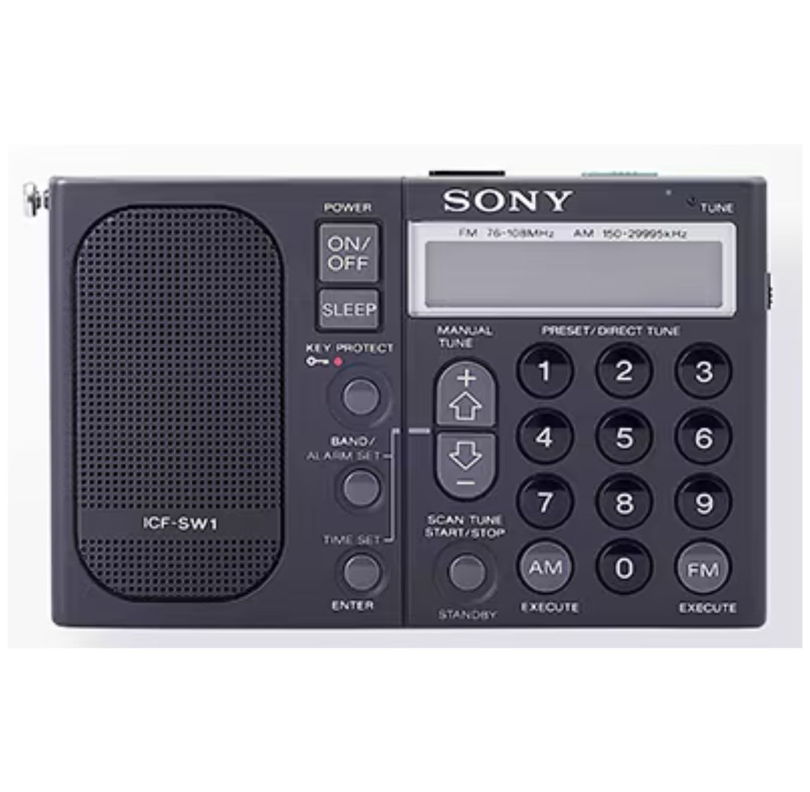

Sony ICF-SW1 Repair Service
Specialist component-level repairs for the Sony ICF-SW1 world band receiver.
Sony ICF-SW1 Repair Specialists
The Sony ICF-SW1 is one of Sony's finest portable world band receivers. Although extremely reliable, many examples now suffer from age-related electronic faults caused by leaking electrolytic capacitors and ageing components.
At Britfix Repairs, we specialise in component-level repair of the Sony ICF-SW1. We diagnose faults to individual components wherever possible rather than replacing complete circuit boards.
Typical repairs include electrolytic capacitor replacement, restoration of damaged PCB tracks, power supply repairs, audio fault diagnosis, LCD display repairs, LED backlight upgrades and battery compartment restoration.
Common Sony ICF-SW1 Faults
- Radio does not power on
- Very low or distorted audio
- Crackling or intermittent sound
- Leaking electrolytic capacitors
- Weak or failed LCD backlight
- Battery compartment damage
- Faulty switches or controls
- Poor AM, FM or Shortwave reception
- Display or tuning faults
Electrolytic Capacitor Replacement
Leaking electrolytic capacitors are one of the most common problems found in the Sony ICF-SW1. Capacitor leakage can cause low audio, distorted sound, intermittent operation, display faults and damage to printed circuit board tracks or solder pads.
Our capacitor repair service includes careful removal of defective capacitors, cleaning of affected circuit boards, repair of damaged tracks where possible and installation of quality replacement capacitors.
- Removal of defective capacitors
- Cleaning of PCB contamination
- Repair of damaged tracks and pads
- Quality replacement capacitors
- Functional testing after repair
LED Backlight Upgrade
Many Sony ICF-SW1 radios suffer from weak or failed display illumination. Where suitable, we can replace or convert the original display lighting to a modern LED backlight.
An LED upgrade provides a brighter, more reliable and longer-lasting display, making the radio easier to use in low-light conditions.
Component-Level Repairs
We repair faults at component level rather than replacing complete circuit boards. Repairs may include power supply circuits, audio amplifiers, display circuits, control circuits and tuning-related faults.
Every radio is inspected before work begins. Because these radios are now collectable, repair results depend on the condition of the circuit board, availability of replacement parts and any previous repair attempts.
Why Repair a Sony ICF-SW1?
The Sony ICF-SW1 is regarded as one of Sony's best portable world band receivers. Many enthusiasts and collectors continue to use these radios because of their excellent sensitivity, compact size and outstanding performance on AM, FM and Shortwave bands.
Professional repair helps preserve these classic receivers for many more years of reliable operation.
UK Postal Repair Service
Customers throughout the UK can send their Sony ICF-SW1 to Britfix Repairs for inspection and repair.
Please contact us before posting your radio. Include the model number, fault symptoms and details of any previous repair work. We will then provide packing and delivery instructions.